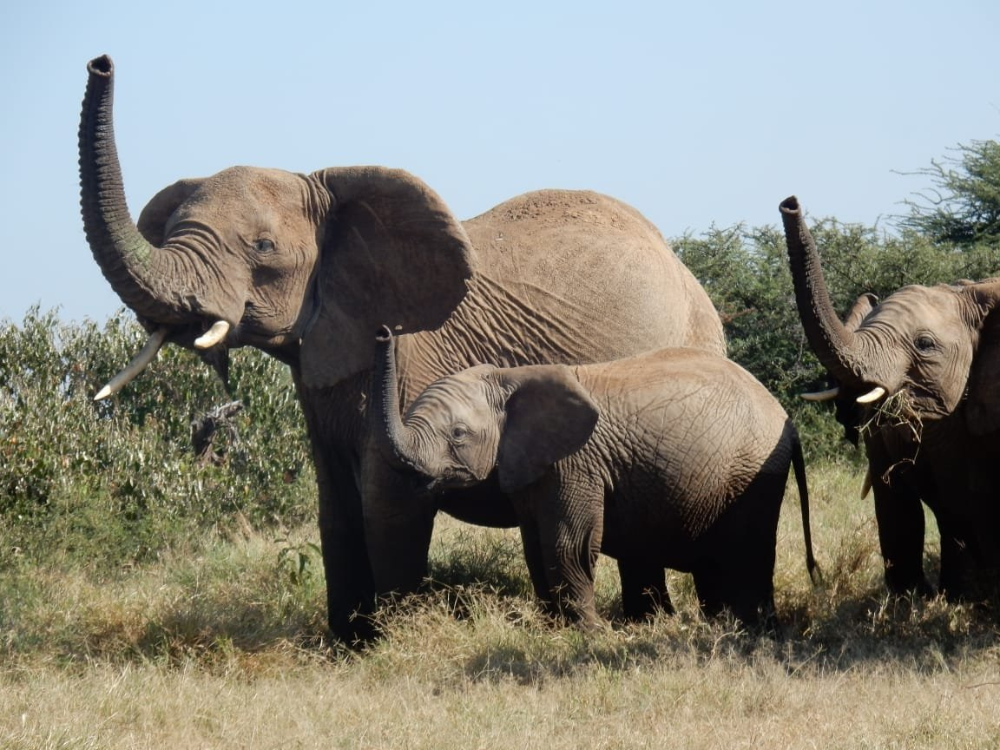

Experiences
Safari, wildlife and cultural experiences led by the Maasai guides, trackers and hosts who know this land firsthand.
Guided by expert Maasai trackers
All of our safari activities are led by Maasai guides who grew up on this land and know its wildlife, seasons and tracks in detail.
-
Guided Game Drives
Morning and early evening drives led by expert Maasai guides, looking for elephant, lion, reticulated giraffe, cheetah and the rare black leopard, among other species that move through the Laikipia ecosystem. Around $30 per person per day — see full rates.
-
Bush Walks
Guided walking safaris that let you track wildlife on foot and experience the landscape at a slower, closer pace than a vehicle allows.
-
Wildlife Tracking
Join local conservationists and trackers on specialised missions, learning to read spoor, droppings and other signs the way they do.
-
Bird Watching
Over 350 recorded bird species move through the area, including resident owls and fish eagles, making this a rewarding stop for casual and serious birders alike.
-
Wildlife Photography
Curated photography trips led by visiting experts, timed around light and animal movement for the best chances at a strong shot.


Hosted by us, not performed for you
These are activities we do as part of daily and ceremonial life. When you join in, you are a guest in that — not an audience for a show staged on your arrival.
-
Maasai Entertainment
Singing, traditional herbal medicine, spear-throwing demonstrations, blacksmith work, our elders' traditional board game, and beading with expert Maasai women — a direct way to learn about our Indigenous lifestyle from the people who live it.
-
Traditional Conservation
Learn firsthand how we have lived side by side with wildlife for centuries, and the specific skills and knowledge that make that possible.

Beadwork by expert Maasai women
Beading is skilled, detailed work, passed down and practised by the women in our community. When you sit with them, you're watching craft, not craft for display.
It's one of several craft and cultural activities you can join during your stay, alongside singing, traditional herbal medicine, spear-throwing demonstrations and blacksmith work.
Campfires
Unwind by the evening fire, sipping the local brew our elders prepare, or sharing wine, stories and bush knowledge passed down through our community.